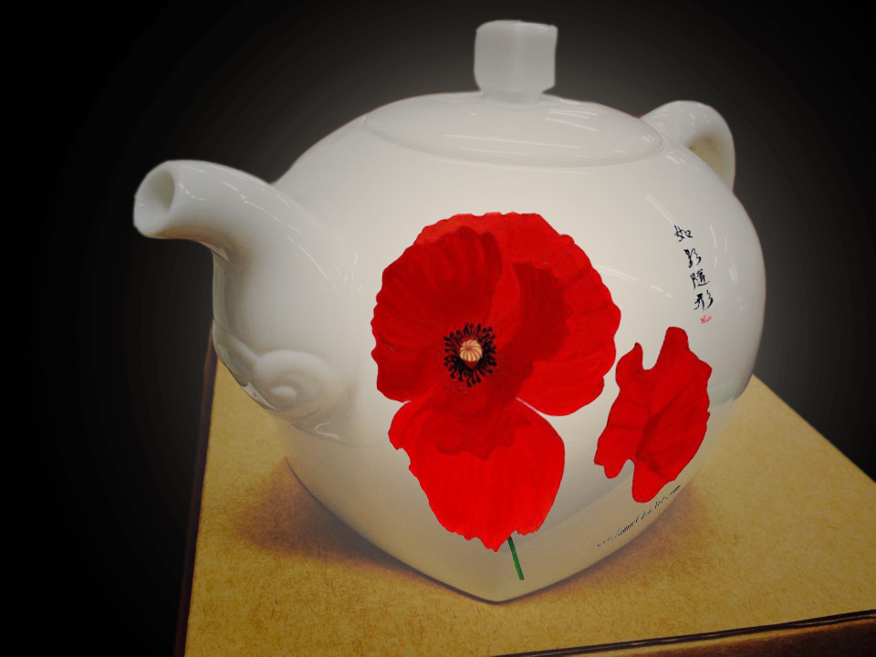
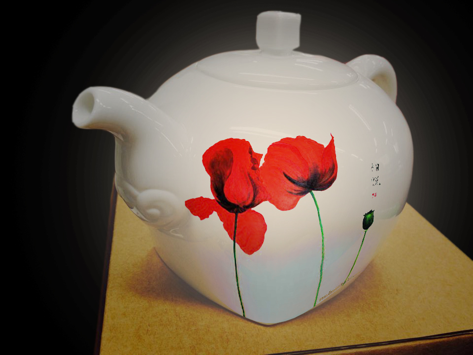

歐洲藝術史及文創概念習作
2015
創作說明
修習「十五世紀後歐洲藝術史」及「文化創意產業行銷」課程期間，針對藝術及文創作品間概念的轉換與結合。
創作工具
Photoshop

藝術概念轉化廣告
將貝里尼(Bellini Giovanni) 的《草原上的聖母》轉化為廣告文宣，描述空氣汙染的意象，提醒觀者空氣汙染的嚴重性。原作中的聖母抱著聖嬰，傳遞出無盡關愛，在此聖嬰即耶穌代表著新生，也代表新的紀元。我引用這樣的概念，投射到當代環境議題，意味環境污染對人類存續的威脅，也期引發觀者藉由關愛下一代的情懷，為其謀求福祉的心態，培養環保的精神。表現上，我將後面的房舍改為排放黑煙的工廠，表現嚴重污染。以聖母手持防毒面具，表現聖母對孩子處在這空汙環境下的憐憫與不捨。

文創商品結合
結合鶯歌陶藝家林松本老師的白茶壺及旅外原住民藝術家優席夫的自然系列畫作，作為台灣文創商品的企劃構想。應該陶藝乃台灣傳統藝術，擁有深厚的傳統技術及藝術家精雕細琢的功力，而優席夫畫作則以台灣原住民文化為底蘊展現出當代畫風，受國際肯定。我認為這兩者結合在藝術上是非常有意義的，而在課堂專注的文創行銷層面，結合將兩者深厚的文化底蘊與國際能見度，並將畫作價值承載在較能夠商品化的白茶壺上，會是深受歡迎的文創商品。

文創商品結合
結合鶯歌陶藝家林松本老師的白茶壺及旅外原住民藝術家優席夫的自然系列畫作，作為台灣文創商品的企劃構想。應該陶藝乃台灣傳統藝術，擁有深厚的傳統技術及藝術家精雕細琢的功力，而優席夫畫作則以台灣原住民文化為底蘊展現出當代畫風，受國際肯定。我認為這兩者結合在藝術上是非常有意義的，而在課堂專注的文創行銷層面，結合將兩者深厚的文化底蘊與國際能見度，並將畫作價值承載在較能夠商品化的白茶壺上，會是深受歡迎的文創商品。